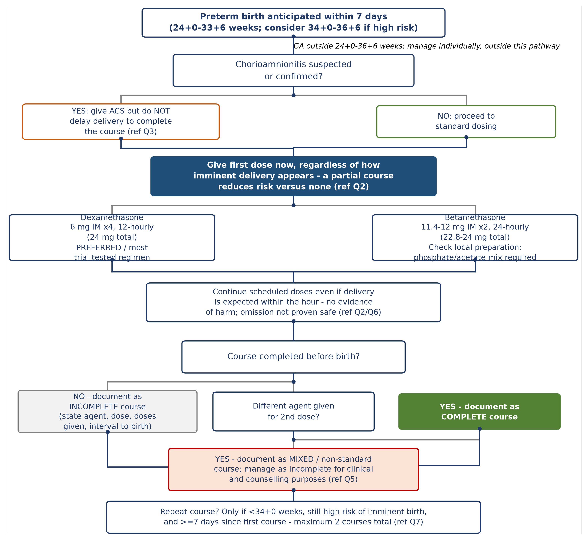
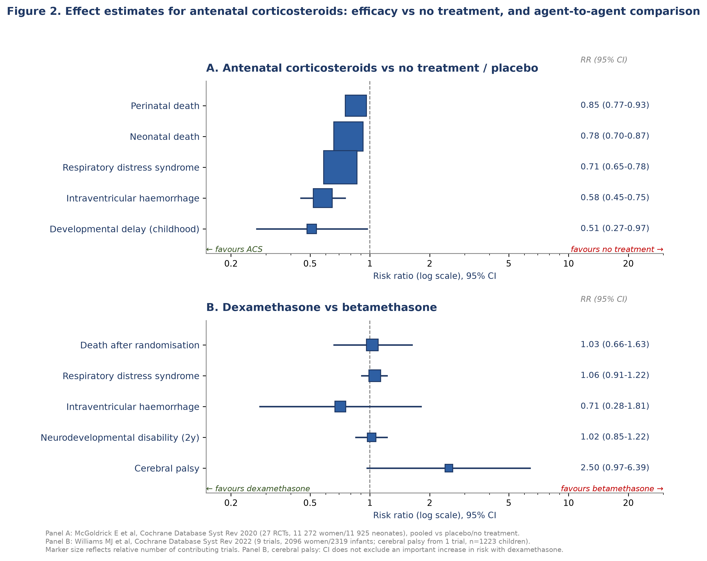
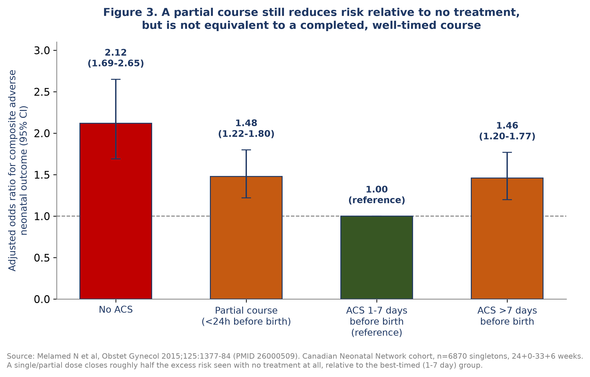
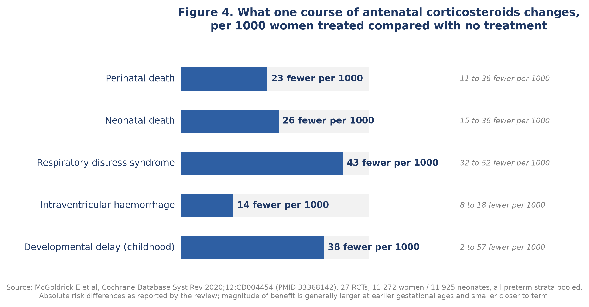

Prepared for departmental and educational use, based on a PMID/DOI-verified evidence synthesis for a UK Level 3 neonatal unit
Correspondence and author details to be completed by the submitting unit prior to journal submission.
Antenatal corticosteroids remain one of the most effective interventions in perinatal medicine, yet several operational questions recur at the cot side that the landmark trials were not designed to answer. This review synthesises the evidence behind six such questions for a UK neonatal unit: which regimen is actually standard, whether dosing interval affects outcome, what to do when delivery is imminent or a course is left incomplete, whether chorioamnionitis changes management, how dexamethasone and betamethasone compare, and how a mixed-agent course should be interpreted and documented. We searched PubMed and the Consensus academic search platform for trials, systematic reviews, and cohort studies, and cross-checked guideline positions from the Royal College of Obstetricians and Gynaecologists, the National Institute for Health and Care Excellence, the World Health Organization, and the American College of Obstetricians and Gynecologists. We graded certainty using GRADE and report effect estimates exactly as published. Twelve-hourly dexamethasone, commonly assumed locally to be non-standard, is in fact the internationally preferred regimen, and no trial has compared dosing intervals against a neurodevelopmental outcome for either drug. Dexamethasone and betamethasone show no difference in the primary composite outcome of the only adequately powered head-to-head trial, but a possible difference in cerebral palsy risk remains statistically unresolved rather than excluded. A partial course reduces risk relative to no treatment at every gestation studied. No evidence exists for mixed-agent courses. Repeat-course harm is concentrated in children ultimately born at term rather than preterm. These findings should inform unit guidance and parent counselling.
Since Liggins and Howie's 1972 trial of antepartum betamethasone in Auckland, antenatal corticosteroids have become one of the most consistently effective interventions available to obstetric and neonatal teams.1 A single course given before preterm birth reduces neonatal death, respiratory distress syndrome, and intraventricular haemorrhage, and the most recent Cochrane review of the core comparison against placebo or no treatment, pooling 27 trials and almost 12000 neonates, confirms these effects at high certainty.2 The intervention is embedded in obstetric and neonatal guidelines worldwide, including the Royal College of Obstetricians and Gynaecologists' Green-top Guideline No. 74, the National Institute for Health and Care Excellence's guidance on preterm labour and birth, and the World Health Organization's 2022 update.3,8
Guidelines answer the central question of whether to treat. They are less complete on the operational questions that recur once that decision has been made: which agent and interval to use, what to do when a course is started but cannot be completed before birth, whether chorioamnionitis changes the calculation, and how to classify a course in which two different corticosteroids were inadvertently given. These questions arise often enough in a busy Level 3 unit to warrant a working evidence base of their own, distinct from the general treatment-versus-nothing literature that most reviews address.
A further complication is that clinical folklore about this topic does not always track the primary literature. In the unit that prompted this review, twelve-hourly dexamethasone dosing had come to be regarded as a local deviation from a supposedly standard twenty-four-hourly regimen, a belief that, as we show below, does not survive contact with the guidance it was attributed to.
This review addresses seven linked questions: what the internationally recommended dexamethasone and betamethasone regimens actually are; whether dosing interval affects neonatal or neurodevelopmental outcome; how to manage compressed or incomplete courses when delivery is imminent; whether chorioamnionitis changes the calculus for administering or repeating a dose; how dexamethasone and betamethasone compare directly; how a mixed-agent course should be classified; and what the long-term evidence, including the sensitive question of exposure in pregnancies that reach term, means for parent counselling.
We searched PubMed and the Consensus academic search platform for systematic reviews, randomised trials, and cohort studies addressing antenatal corticosteroid regimen, dosing interval, treatment-to-delivery interval, chorioamnionitis, agent comparison, mixed-agent exposure, and long-term outcome, without date restriction. Guideline text was cross-checked against the Royal College of Obstetricians and Gynaecologists, National Institute for Health and Care Excellence, World Health Organization, and American College of Obstetricians and Gynecologists publications where accessible. Every citation was verified against its PubMed identifier or digital object identifier before inclusion, and none was retained without that verification. Effect estimates are reported exactly as published, without rounding or recalculation, and absolute risks are given wherever the source allowed. Certainty was graded using the GRADE framework (high, moderate, low, very low). Where no direct trial evidence existed for a question, we say so explicitly before offering pharmacological or mechanistic reasoning, which is labelled throughout as inference rather than evidence.
The regimen most often quoted as standard, dexamethasone given as two doses twenty-four hours apart, is not the regimen most guidelines and trials actually specify. The World Health Organization's 2022 recommendation and the American College of Obstetricians and Gynecologists both specify dexamethasone sodium phosphate six milligrams intramuscularly every twelve hours for four doses, a total of twenty-four milligrams.3 This is also the regimen used in the WHO ACTION-I trial, the largest contemporary dexamethasone trial, which randomised 2852 women across five countries without a reported neurodevelopmental safety signal.4 The Royal College of Obstetricians and Gynaecologists' Green-top Guideline No. 74 lists a twenty-four-hourly, two-dose alternative of twelve milligrams twice, on the basis of a trial showing similar efficacy to betamethasone when both drugs were given on that schedule, but this is offered as an alternative rather than the primary regimen.8 Betamethasone, not dexamethasone, is the drug conventionally given twenty-four-hourly, and the reason is pharmaceutical rather than pharmacological: the clinically used betamethasone preparation is a mixture of betamethasone sodium phosphate, which is absorbed rapidly, and betamethasone acetate, which forms a depot at the injection site and releases drug over days.9 Dexamethasone sodium phosphate has no such depot fraction and a short plasma half-life, which is why sustaining fetal exposure with dexamethasone requires four doses at twelve-hourly intervals rather than two at twenty-four (table 1).
This distinction matters beyond terminology. A unit that regards its own twelve-hourly dexamethasone practice as a deviation risks correcting it toward a regimen with a thinner evidence base, on the mistaken premise that twenty-four-hourly dosing is more established. Before any change to local practice, the regimen actually in use should be checked against the trials and guidelines that generated the recommendation, not against an assumption about what standard means.
| Source | Dexamethasone regimen | Betamethasone regimen |
|---|---|---|
| RCOG Green-top 74 (2022) | 24 mg IM total: 2x12 mg 24h apart, or 4x6 mg 12h apart | 24 mg IM total: 2x12 mg 24h apart (sodium phosphate/acetate mix) |
| WHO (2022, preferred regimen) | 4x6 mg IM, 12h apart | 2x12 mg IM, 24h apart |
| ACOG | 4x6 mg IM, 12h apart | 2x12 mg IM, 24h apart |
| ASTEROID trial (2019) | 12 mg IM x2, 24h apart | 11.4 mg IM x2, 24h apart |
| Liggins and Howie (1972, original trial) | Not used | Phosphate 6 mg + acetate 6 mg, x2, 24h apart |
No trial has directly compared twelve-hourly against twenty-four-hourly dexamethasone at matched total dose, with or without long-term follow-up. The only randomised interval comparison for either drug used betamethasone: Khandelwal and colleagues randomised 228 women to betamethasone twelve or twenty-four hours apart and found equivalent rates of respiratory distress syndrome, 36.5% versus 37.3%, but a higher rate of necrotising enterocolitis with the shorter interval, 6.2% versus 0% (p=0.03), a finding from a small, unblinded, single-centre trial that has not been replicated and carried no neurodevelopmental follow-up.10 Two subsequent retrospective cohorts of betamethasone interval, one of which included developmental assessment at twenty-four months, found no significant differences in mortality, severe morbidity, or development, with a non-significant trend toward better scores in the twelve-hourly group.11,12 The 2022 Cochrane review dedicated to comparing corticosteroid regimens concluded that the certainty of evidence for any regimen comparison, including this one, was very low, and that the existing trial base does not support the use of one particular corticosteroid regimen over another.6 For dexamethasone specifically, this is an absence of evidence rather than evidence of equivalence, and the distinction should be preserved in any unit guideline.
Two historical safety signals are frequently invoked in this discussion and deserve separating from one another. The first concerns sulfite preservatives: mouse and cell-culture studies from the group that first raised concern about dexamethasone showed that a sulfite-containing commercial preparation, not the pure drug, increased neuronal death in vitro, while pure dexamethasone and betamethasone did not.13,14 This remains a mechanistic hypothesis rather than a demonstrated human antenatal harm, and whether it distinguishes current UK preparations of the two drugs was not established from primary product information in this review. The second concerns periventricular leukomalacia: Baud and colleagues' 1999 cohort of 883 infants found a higher rate of cystic periventricular leukomalacia with dexamethasone than betamethasone, 11.0% versus 4.4%, adjusted odds ratio 0.3 for betamethasone relative to dexamethasone (95% confidence interval 0.1 to 0.7), a single retrospective cohort that has shaped clinical practice for a quarter of a century.15 Later, larger, randomised evidence has not clearly confirmed this specific finding, but neither has it excluded a related one. The pooled Cochrane estimate for intraventricular haemorrhage with dexamethasone versus betamethasone is compatible with no difference, adjusted relative risk 0.71 (95% confidence interval 0.28 to 1.81), and the pooled cerebral palsy estimate from the same trial base remains wide enough to include both no effect and an important increase in risk with dexamethasone, relative risk 2.50 (95% confidence interval 0.97 to 6.39).6 The honest position is that this question is open, not settled in either direction.
The relationship between treatment-to-delivery interval and benefit is graded rather than threshold-shaped, and individual studies disagree about exactly how short an interval remains useful. A Canadian cohort of 6870 infants found that even a partial course of less than twenty-four hours closed roughly half the excess risk seen with no treatment at all, relative to infants delivered one to seven days after a complete course, adjusted odds ratio for a composite adverse outcome 2.12 for no treatment and 1.48 for a partial course, against a reference of 1.00 (figure 3).16 A European cohort of 4594 very preterm infants found mortality benefit accruing rapidly and plateauing at more than fifty per cent risk reduction by eighteen to thirty-six hours, with a simulation suggesting benefit could persist from a dose given as little as three hours before birth, though that specific figure is modelled rather than directly observed.17 The largest contemporary cohort with granular timing data, drawn from the NICHD Neonatal Research Network, found a continuous, monotonic increase in survival without severe morbidity with each additional hour from dose to delivery, in a population whose median interval was only 3.8 hours, with no threshold below which benefit disappeared.18
This evidence supports giving the first dose regardless of how imminent delivery appears. It is less clear whether the second dose of a standard course adds anything when it will be given within an hour of birth, the scenario that most directly concerns a busy labour ward. The closest available evidence is a small Spanish cohort in which the mean interval from a single betamethasone dose to delivery was approximately one hour: serious neonatal outcomes were less frequent than in unexposed infants, odds ratio 0.2 (95% confidence interval 0.07 to 0.9), with no signal of harm.19 The best randomised evidence on omitting a dose comes from BETADOSE, a French trial of 3244 women that tested a single half-dose against the standard two-dose betamethasone course: surfactant need within forty-eight hours was numerically higher with the single dose, 20.0% versus 17.5%, and the trial could not demonstrate that omitting the second dose was non-inferior.20 No study has isolated harm, whether hypoglycaemia, hypotension, or altered adrenal function, from a dose given in the final hour before birth specifically, and the mechanistic literature on fetal lung maturation suggests that the genomic effects a corticosteroid needs hours to produce are unlikely to have occurred by then, which argues against both meaningful benefit and meaningful harm from that particular dose.21,22 On the evidence available, a scheduled dose should not be withheld because delivery seems too close for it to work; there is no demonstrated downside to giving it, and the trial evidence on omission points, if anything, the other way.
Every pooled analysis identified shows antenatal corticosteroid benefit persisting when chorioamnionitis is present. A meta-analysis of seven observational studies found reduced mortality (odds ratio 0.45), respiratory distress syndrome (0.53), and severe intraventricular haemorrhage (0.39 for histological chorioamnionitis, 0.29 for clinical chorioamnionitis) among infants of mothers with chorioamnionitis who received corticosteroids compared with those who did not, and a second meta-analysis of nine studies found materially similar effect sizes.23,24 No randomised trial has enrolled women with active chorioamnionitis specifically, for reasons that are as much ethical as practical: withholding a treatment already known to help in the general population from a subgroup thought likely to benefit similarly is difficult to justify to a trial ethics committee, so this evidence base is likely to remain observational.
Neonatal sepsis is the outcome of most concern when combining corticosteroids with suspected infection, and here the picture is less settled. One retrospective cohort found no increase in proven sepsis with corticosteroid exposure in chorioamnionitis-positive infants, while a smaller Korean cohort found an increased sepsis signal with optimally timed dosing in the same population, adjusted odds ratio 6.85 (95% confidence interval 1.02 to 46.07), an estimate imprecise enough to require caution rather than dismissal.25,26 Current guideline positions, reconstructed from secondary sources rather than directly verified primary text in every case, treat suspected infection as a caution about delivery timing rather than a reason to withhold corticosteroids altogether. The consistent message across the guidance reviewed is to give what course is achievable without delaying delivery to complete it, not to avoid corticosteroids because infection is present.
The best direct comparison is ASTEROID, a blinded trial of 1346 women and 1509 fetuses across fourteen Australian and New Zealand hospitals, which randomised dexamethasone sodium phosphate twelve milligrams twice, twenty-four hours apart, against betamethasone on an equivalent schedule.5 Death or neurosensory disability at two years occurred in 33% of the dexamethasone group and 32% of the betamethasone group, adjusted relative risk 0.97 (95% confidence interval 0.83 to 1.13), an interval narrow enough to exclude a meaningfully large difference in either direction for this composite outcome. The updated Cochrane comparison, built substantially on this trial, found essentially unchanged risk of respiratory distress syndrome, relative risk 1.06 (95% confidence interval 0.91 to 1.22, high certainty), and imprecise estimates for neonatal death and intraventricular haemorrhage that cannot distinguish equivalence from a real difference.6
The outcome that resists a reassuring summary is cerebral palsy (figure 2). The pooled estimate from the same trial base, drawn from a single study of 1223 children, gives a relative risk of 2.50 with a confidence interval from 0.97 to 6.39, wide enough to include both no difference and a sixfold increase in risk with dexamethasone.6 This sits alongside, without confirming, the older observational literature that first raised concern about dexamethasone, including Baud's periventricular leukomalacia cohort and two NICHD cohorts that found trends toward worse neurological outcome with dexamethasone, though those cohorts used a fractionated four-dose regimen against a two-dose betamethasone comparator and so confound drug with schedule.15,27,28 A guideline or unit policy stating that the two drugs are equally safe overstates what the evidence shows. The primary composite outcome is settled; cerebral palsy is not, and both statements belong together rather than one being quoted without the other.
Practical differences between the drugs are smaller than sometimes assumed. When both are given on a matched twenty-four-hourly, two-dose schedule, the number of injections does not differ, and much of the older literature that found a dexamethasone disadvantage compared a four-dose dexamethasone regimen with a two-dose betamethasone one, which confounds the comparison.27,28 The World Health Organization's choice of dexamethasone for its low-resource trial programme reflected cost, heat stability, and supply reliability rather than a judgement about superior efficacy, and this rationale does not transfer to a setting where both drugs are reliably stocked.4
A course in which one dose of betamethasone and one dose of dexamethasone are given, whether by clinical decision or by the accident of a handover, has no published evidence behind it of any design. Structured searches across PubMed and Consensus for this combination returned nothing, a genuine gap rather than a search failure. In its absence, the only available reasoning is pharmacological. The two drugs are near-identical in potency and negligible in mineralocorticoid activity, and cross the placenta in similar proportion.29 The clinically relevant difference is formulation: betamethasone's depot acetate fraction continues releasing drug for days after a single injection, while dexamethasone sodium phosphate is cleared within hours.30 A betamethasone dose followed twenty-four hours later by dexamethasone benefits from the first dose's ongoing depot release, supplemented briefly by the second drug. The reverse sequence, dexamethasone followed by betamethasone, more closely resembles a single betamethasone dose preceded by a brief, largely cleared pulse of the other drug. Neither sequence reproduces the pharmacokinetic profile either standard regimen was designed, and shown in trials, to produce.
On this reasoning, a mixed course is best treated administratively as non-standard rather than assumed equivalent to a completed course of either agent, and documented as such: both agents, both doses, and the interval between them, with the course managed clinically as if incomplete. This is a judgement drawn from mechanism, not from outcome data, and should be presented to parents and colleagues with that qualification attached.
Follow-up of Liggins and Howie's original cohort to thirty years found no difference in body size, blood pressure, lipids, or diabetes prevalence, with a small signal of higher post-glucose-load insulin in the corticosteroid-exposed group that did not translate into measurable cardiovascular disease.31 Psychological and cognitive function at thirty-one years showed no group difference.32 This remains the longest follow-up of a single-course exposure and is reassuring as far as it goes, though it reflects one trial's regimen and era.
Repeat dosing tells a more complicated story. The MACS trial found no overall difference in death or neurodevelopmental disability at five years between repeat and single courses, 24.9% versus 24.8%, but a gestational-age-stratified analysis of the same trial found the harm concentrated specifically in children eventually born at thirty-seven weeks or later, where the composite outcome occurred in 22.5% of the repeat-course group against 15.3% of the single-course group, odds ratio 1.69 (95% confidence interval 1.04 to 2.77).7,33,34 This is a more precise and more actionable finding than the trial's headline null result, since it identifies exactly the situation, a pregnancy that may end at term, in which repeat dosing carries the clearest signal of harm. The companion ACTORDS trial found no adverse cardiometabolic or neurocognitive signal at six to eight years, and its most recent follow-up, to a mean of twenty and a half years, likewise found no clear difference in asthma or other adult outcomes, though with confidence intervals wide enough that a modest effect cannot be excluded.35,36,37
Late-preterm dosing, established by the ALPS trial, reduces the neonatal respiratory composite outcome, 11.6% versus 14.4%, at the cost of a real, mostly transient, increase in neonatal hypoglycaemia, 24.0% versus 15.0%, and neurodevelopmental follow-up to a median of seven years found no difference in cognitive outcome.38,39 The real-world benefit is smaller than the trial's efficacy figure once reweighted to a population cohort, a distinction worth making explicit when counselling parents rather than quoting the trial's relative risk reduction alone.40
The most difficult question to answer honestly concerns children exposed to corticosteroids in anticipation of preterm birth who are then born at term. A Finnish national register of 670097 children, 14868 of them exposed, found a higher rate of mental and behavioural disorder diagnosis among term-born exposed children, 8.89% versus 6.31%, hazard ratio 1.47 (95% confidence interval 1.36 to 1.69), an association that attenuated but did not disappear in a within-sibling comparison, hazard ratio 1.38.41 A Taiwanese national cohort examining the same question found no such association in the full-term stratum specifically, the opposite pattern to the Finnish data in that subgroup.42 Neither design can separate the effect of the drug from the effect of whatever made the pregnancy look risky enough to warrant treatment in the first place, and a small German study found that children of mothers treated for threatened preterm labour scored lower than controls regardless of whether they actually received corticosteroids, which points toward the underlying condition rather than the drug as the more likely explanation.43 The honest summary for a parent is that an association exists in some but not all of the available cohorts, that it has not been shown to be caused by the drug rather than by the reason it was given, and that a modest true drug effect cannot currently be excluded.
| Recommendation | Certainty |
|---|---|
| Twelve-hourly dexamethasone (6 mg x4) is standard international practice, not a local deviation | High |
| No trial evidence links dexamethasone dosing interval to any neonatal or neurodevelopmental outcome | Absence of evidence |
| Give the first dose regardless of how imminent delivery appears | Moderate |
| Continue scheduled doses even when delivery is expected within the hour | Low |
| Chorioamnionitis alone should not withhold ACS if delivery is not imminent | Low (observational only) |
| Do not delay delivery to complete a course when chorioamnionitis is driving the clinical picture | Guideline consensus |
| Either dexamethasone or betamethasone is an acceptable first-line agent | Moderate |
| Disclose the unresolved cerebral palsy signal rather than presenting the two agents as equally safe | Low |
| Document mixed-agent courses as non-standard and manage as incomplete | Inference only, not graded clinical evidence |
| Limit repeat courses to a maximum of two, at least 7 days apart, with added caution if the pregnancy may reach term | Moderate |
Four gaps identified in this review would meaningfully change practice if filled:
Antenatal corticosteroids remain firmly beneficial, and most of the operational uncertainty addressed in this review concerns refinement rather than reversal of established practice. The regimen a unit believes to be standard is worth checking against primary guidance rather than assumed correct by tradition. Two findings deserve wider circulation than they currently receive: the cerebral palsy comparison between agents is unresolved, not settled, and repeat-course harm concentrates in children who end up born at term. Both should shape how clinicians counsel parents and how units write their own guidelines, rather than being smoothed into a single reassuring line.

Figure 1. Practical decision pathway for antenatal corticosteroid administration in a UK Level 3 neonatal unit, incorporating chorioamnionitis, imminent delivery, incomplete-course, and mixed-agent scenarios addressed in this review. ACS, antenatal corticosteroid.

Figure 2. Effect estimates for antenatal corticosteroids against no treatment (panel A) and dexamethasone against betamethasone (panel B), from the two current Cochrane reviews on this topic.2,6 Panel B, cerebral palsy: the confidence interval does not exclude an important increase in risk with dexamethasone.

Figure 3. Adjusted odds ratio for a composite adverse neonatal outcome by treatment-to-delivery interval, redrawn from Melamed et al.16 A partial course still reduces risk relative to no treatment, but is not equivalent to a completed, well-timed course.

Figure 4. Absolute risk differences per 1000 women treated with a single course of antenatal corticosteroids compared with no treatment, redrawn from the Cochrane review of McGoldrick et al.2